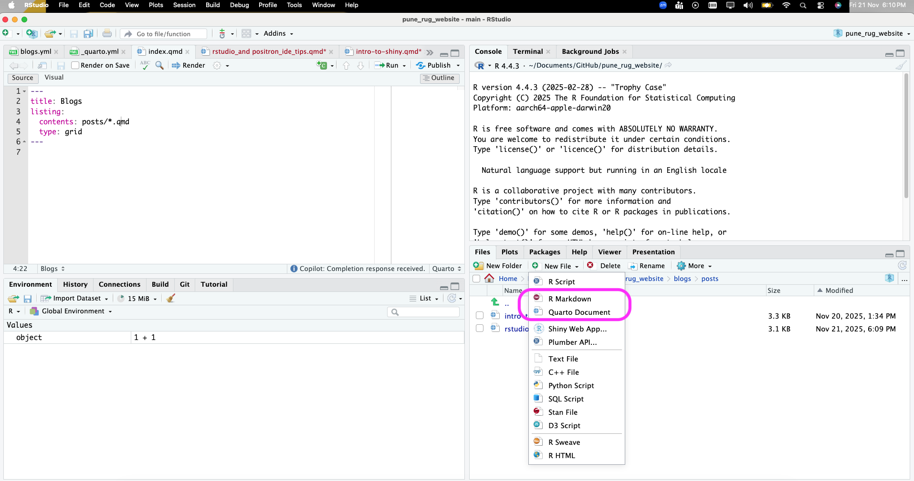
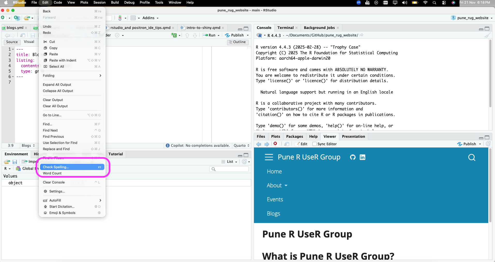
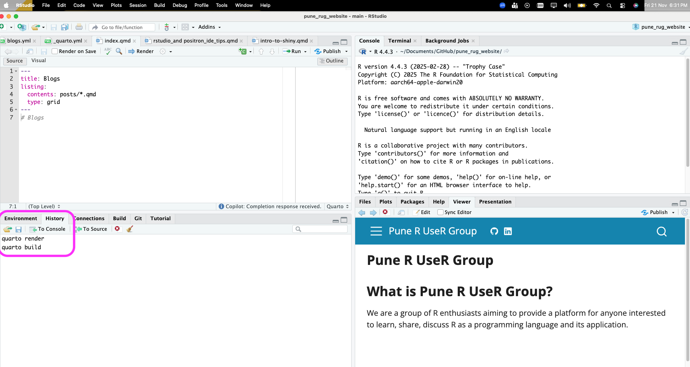
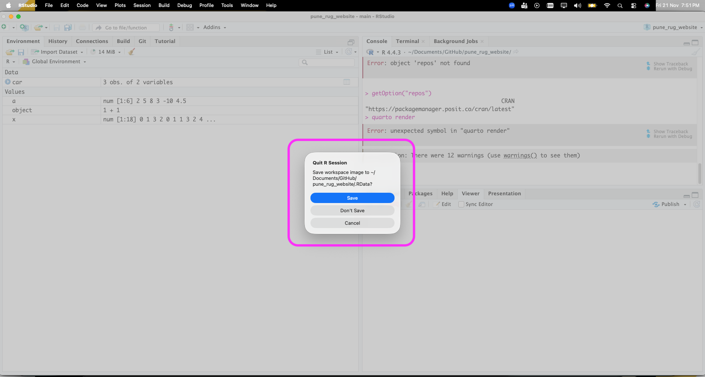
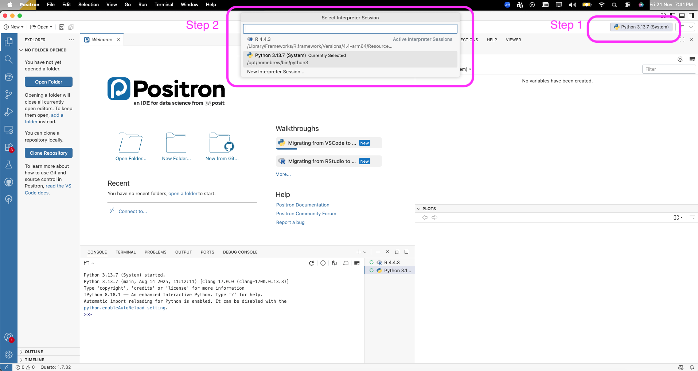

RStudio and Positron IDE Tips to Make Your Workflows Efficient!
RStudio and Positron are IDEs useful for running R programming language code. In this blog, we will explore some tips and tricks to make your workflow more efficient while using these IDEs.
RStudio IDE tips
RStudio is a free and open-source integrated development environment (IDE) that enhances the user experience for the R programming language. Here are some tips to enhance your workflow in RStudio:
- New Project for a new analysis: For a new code, use New Project and then create the necessary files (.R, .Rmd, .qmd, etc.) inside the New Project. This helps is keeping the r environment including the dependencies separate for separate projects.

- Four panels in RStudio: Familiarise yourself with the four-panel layout of RStudio (Source, Console, Environment/History, Files/Plots/Packages/Help). This layout helps you efficiently manage your coding, output, and resources.
- Adopt a consistent folder structure: Organise your project directory with sub-folders for clarity, such as
data/(withraw/andprocessed/subdirectories),scripts/, andoutput/(for figures and reports). - Create dynamic reports rather than static: One can use R markdown or a quarto file to create a dynamic output document, slides, or website. This allows you to integrate code and narrative text, making it easier to update and reproduce your analysis.
 - Integrate Version Control using Git or GitHub: RStudio has a built in Terminal as well as a Git pane to help you manage version control. This allows you to track code or text changes, collaborate with others on shared and/or open source projects, and maintain a history of your project.

- Spell Check feature: Use the spell check feature from
Edit -> Check Spelling...to ensure your code comments and documentation are free from typos.

- History: Go through the
Historytab to review previously run commands. You can easily re-run or copy commands from your history to save time.

- Environment: Use this section to have a cursory look at the active variables and a glimpse of the values stored in them.

- Running code in chunks: In R markdown and quarto files, use the features to run selected lines, current chunk, next chunk, all the chunks, all the chunks above, and all the chunks below to efficiently test and run your code.

- Do not save workspace image: It is suggested to not save the workspace image while exiting RStudio to make the analysis reproducible. Saving the workspace (
.RDatafile) captures the state of your R session, including all loaded objects, variables, and functions. While convenient for restarting, it makes it difficult for others (or your future self) to reproduce your results without that specific.RDatafile. A truly reproducible analysis relies on a script that, when run from a clean environment, generates all necessary objects and results.

.RData filePositron IDE tips
Positron is an IDE that combines exploration and production work in one free, AI-assisted environment, empowering the full spectrum of data science in Python and R. It helps to quickly move from data to insight to application in one code editor. The UI is rather similar to that of Visual Studio Code. Here are some tips to enhance your workflow in Positron:
- Easily switch between Python and R: It supports Python and R equally well. In RStudio, if one tries to run Python, it requires them to install certain packages and also install Jupyter separately. In Positron, you can seamlessly switch between R and Python with just 2 click.

- Tip 2:
- Tip 3:
- Tip 4:
- Tip 5: